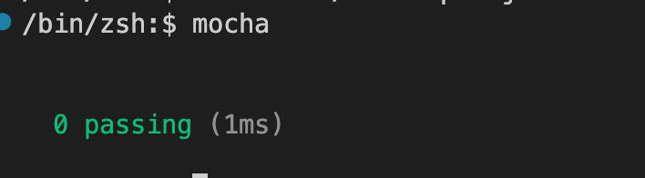
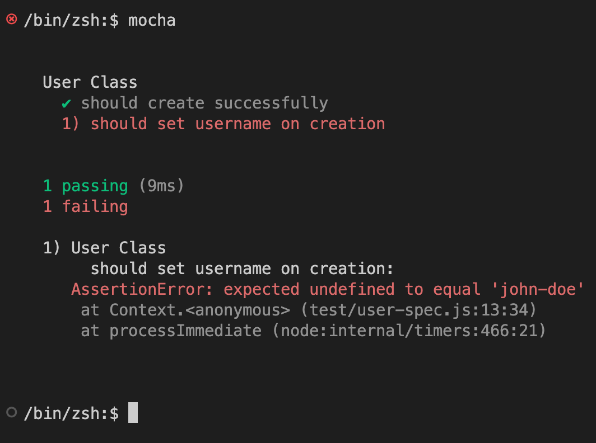
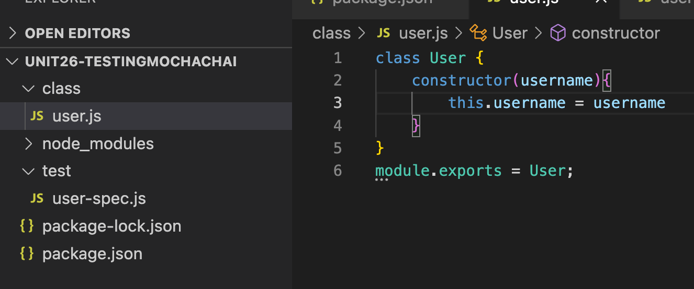
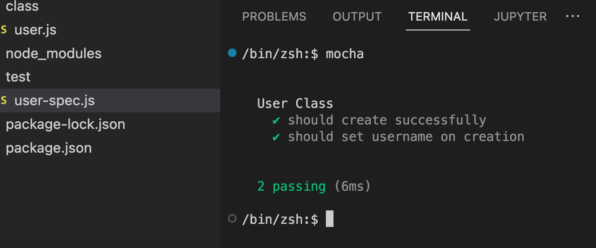

Make directory and initialize npm
npm init
For the test command option type: mocha
You can see test: mocha in the package.json after you initilize the package
next run the commands npm install mocha and npm install chai.
This will create a node_modules directory. Download the latest version of Mocha and Chai
You might need to review how to download latest version, add it Unit 23 npm2, or make a new lesson for it
Create a user.js page and place in a folder named class within the direcotry. BE AWARE, mocha
will expect this to be in a folder called test
class/user.js class User { } module.exports = User
In user-spec.js, load Chai and the User class being tested. Note the relative loading path in require
test/user-spec.js
const { expect } = require("chai");
const User = require("../class/user")
If you type mocha in your terminal, you should see a 0 passing (1ms) message. If you are getting errors, make sure your file structure is set up correctly and you are running mocha from the testing-demo directory.

Set up the test functionality in the user-spec.js file below the
require chai and require ../class/usr
const { expect } = require("chai");
const User = require("../class/user")
describe("User Class", function(){
it("should create successfully", function(){
let user = new User();
expect(user).to.exist;
})
})
describe is a group of test for the user class.
it is a single spec to test if the user can be created,
if it can expect checks if the new user exist
describe and it comes from the the testing frameword Mocha while expect comes from assertion library Chai
run mocha and you should see the it message
Specify a test to require all users to have a username upon creation
The below code will produce an error because the class doesn't not have
a property username
it.("should set username on creation", function(){ let user = new User("john-doe"); expect(user.username).to.equal("john-doe"); })
If we run mocha the error produced will look like this
To fix this, add a username property to the User class in user.js
Now it is successful and should look like this when running mocha

When creating of tests for a user class, you will likely need to create a new user before each test runs. You
can clean up the repetition using the Mocha Hooks, before or beforeEach.
The beforeEach hook will set up code that runs before each test in the describe block while before runs once at the
beginning of the block.
describe("user class", function(){
let user;
beforeEach(() => {
user = new User("john-doe")
})
it("should create successfully",function(){
expect(user).to.exist;
})
it("should set username on creation",function(){
expect(user.username).to.equal("john-doe")
})
})
Similarly, there are afterEach and after hooks which can be used to clean up after each test, or after the test block
runs.